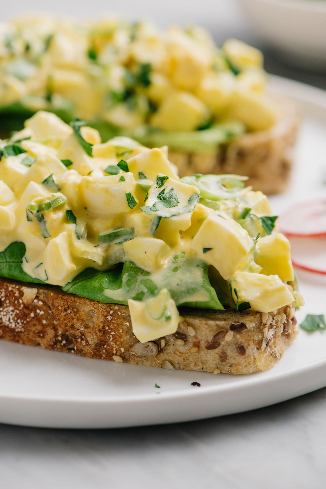

Egg Salad

Description
Egg salad is a dish consisting of chopped hard-boiled or scrambled eggs, mustard, and mayonnaise, and vegetables often including other ingredients such as celery. I
Ingredients
These are the ingredients you'll need to make the best egg salad of your life:
- 8 eggs
- ½ cup mayonnaise
- ¼ cup chopped green onion
- 1 teaspoon prepared yellow mustard
- ¼ teaspoon paprika
- salt and pepper to taste
Steps
- Place eggs in a saucepan and cover with cold water. Bring water to a boil and immediately remove from heat. Cover and let eggs stand in hot water for 10 to 12 minutes. Remove from hot water, cool, peel, and chop.
- Place chopped eggs in a bowl; stir in mayonnaise, green onion, and mustard. Season with paprika, salt, and pepper. Stir and serve on your favorite bread or crackers.
Main Page